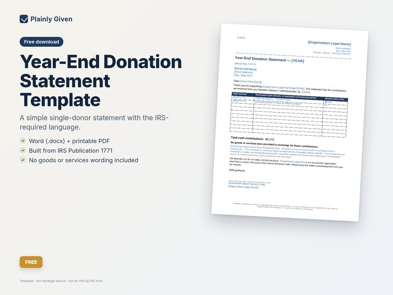
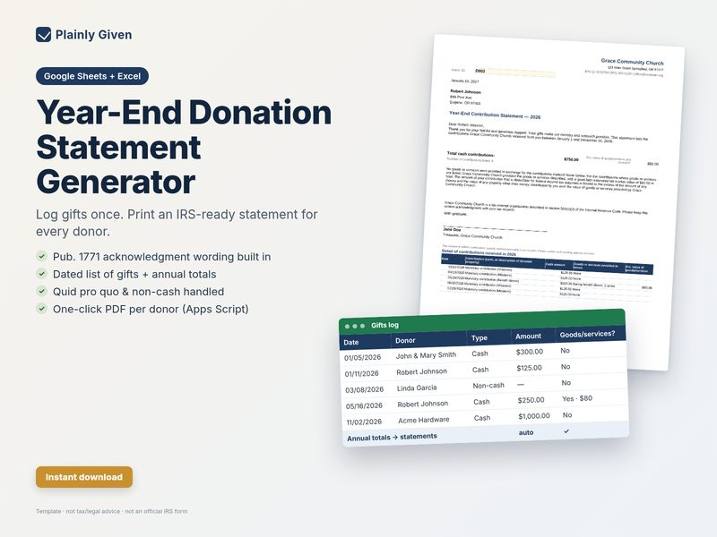

Free Year-End Donation Statement Template
A clean, one-page annual giving statement for a single donor, editable in Word or Google Docs. It includes the acknowledgment wording described in IRS Publication 1771.
Download Word (.docx) Download PDFNo email or sign-up required. For your own organization's use.

What's in the template
- Letterhead area for your organization name, address, EIN and logo
- Donor name and address block
- Gift table with date, description and amount (cash) or description only (property)
- Total cash contributions line
- The three goods-or-services options: none provided, intangible religious benefits only, or a description with good-faith value
- Tax-exempt status sentence and signature block
- A "how to use" page with the IRS requirements summarized
How to use it
- Open the .docx in Word or upload it to Google Drive and open with Google Docs.
- Replace each highlighted [field] and add your logo.
- Fill in every gift the donor made during the year, with dates. Describe, don't value, donated items.
- Keep the goods-or-services sentence that's true and delete the others.
- Sign, then mail or email to the donor by January 31. Keep a copy.
Need more than one statement?

Year-End Donation Statement Generator
Typing statements one at a time gets old fast. This Google Sheets + Excel tool fills in each donor's dated gift list, totals and wording automatically, and can save a PDF for every donor in one click.
$24
Buy on Gumroad: $24 Details
Donation Receipt Template Pack
Five editable templates: single gift, in-kind, annual church statement, thank-you letter, and event (quid pro quo) receipt. Word + PDF.
$9
Buy on Gumroad: $9 DetailsNew to this? Read what the IRS requires in a donation receipt.
Disclaimer: Plainly Given provides templates and general information for record-keeping. This is not tax or legal advice, and our templates are not official IRS forms. Use them only to acknowledge contributions your organization actually received. Rules change and individual situations differ; consult a qualified tax professional.